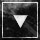

SCP-087-B
SCP-087-B是一个基于SCP-087的小型实验性恐怖游戏。你发现你处在一个随机生成的黑暗楼梯中，下面潜伏着某种东西，你的唯一一条路就是向下走。你能走多远？
该游戏的灵感来自Haversine的SCP-087游戏。一开始是一个非常简单的小游戏，Regalis因为好玩所花费一个周末而写的游戏，他把它做的更进一步，增加了更多楼层、不同的房间类型和随机事件。
由于该游戏过于简单，子悦汉化组对于该游戏的汉化项目需要一些时间。
 下载SCP-087-B（英文原版）
SCP-087-B是一个基于SCP-087的小型实验性恐怖游戏。你发现你处在一个随机生成的黑暗楼梯中，下面潜伏着某种东西，你的唯一一条路就是向下走。你能走多远？
该游戏的灵感来自Haversine的SCP-087游戏。一开始是一个非常简单的小游戏，Regalis因为好玩所花费一个周末而写的游戏，他把它做的更进一步，增加了更多楼层、不同的房间类型和随机事件。
由于该游戏过于简单，子悦汉化组对于该游戏的汉化项目需要一些时间。